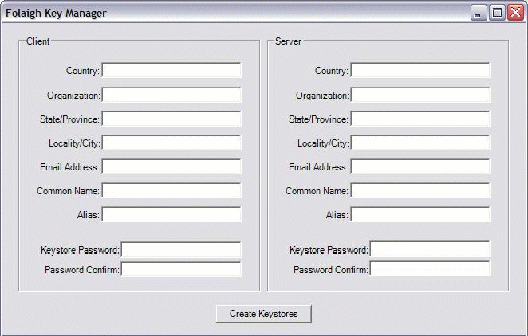

folaigh
Definition (Sainmhíniú): to conceal;
Using Folaigh
Folaigh is a C# and Java library that provides encryption, integrity and authentication for communication between systems and applications. Folaigh is transport-neutral. You should be able to plug it into any transport mechanism, including web services, RPC or simple TCP/IP communication.
Folaigh encrypts and signs a method call that takes any number of string arguments and returns a string return value. The return value is also encrypted and signed. On receipt of a message or reply, Folaigh verifies the signature and decrypts the message.
To allow two parties to use Folaigh to communicate, they must agree on keys. Folaigh comes with the .NET application FolaighKeyManager. This application can be used to generate key stores for both parties. Folaigh uses standard PKCS#12 key stores. FolaighKeyManager produces two password-protected encrypted key stores; one for the client and one for the server.
Each user fills out the information in the “Client” or “Server” section. The “client” and “server” designations are somewhat arbitrary. Once each side has a key store, communication can go either way. You must fill out all of the fields to create keys. Once the fields are filled in, click “Create Keystores” and select a folder for the key stores. The key store files will be named according to the “alias” fields with a “.p12” extension.

The client key store contains private and public keys for the client, and the public key of the server. The server key store contains private and public keys for the server, and the public key of the client. Folaigh uses 1024-bit RSA keys.
When a message is sent, Folaigh generates a 256-bit AES key. This key is used to encrypt the message. RSA keys are not appropriate for generating keys because RSA isn't good at encrypting long messages. The RSA keys are used to encrypt and decrypt the AES key, and to sign the message hash.
Here's the sequence of events for a Folaigh method call:
Setting Up the Proxy and Stub
To use Folaigh you must write proxy and stub code on the client and server.
The ITransportProxy Interface
The ITransportProxy interface is used to send and receive calls between client and server. You must create a class that implements this interface, because it handles the details of whatever transport mechanism you've chosen. When you instantiate SecureTransport, you pass a reference to your class to SecureTransport's constructor.ITransportProxy has two methods: “send” and “receive”. The “send” method handles sending the encrypted message to the server. The “receive” method receives the decrypted message on the server.
If calls will be going both ways, you must implement both the “send” and “receive” method on both sides of the conversation. Otherwise, you only need to implement the “send” method on the side that sends calls, and the “receive” method on the side receiving them. You are free to implement the communication method any way you want.
Here's an example in Java:
class MyTransport implements ITransportProxy
{
String send(String message, String signature, String aesKey, String IV, String senderAlias) {
// Send the parameters to the server
// ...
}
String receive(boolean validSignature, MethodInfo methodInfo, String senderAlias) {
return myMethod(methodInfo.getArg(0), methodInfo.getArg(1));
}
String myMethod(arg1, arg2) {
String result;
// Do stuff
return result;
}
}
Here's one in VB.NET:
Public Class MyWebServiceProxy
Implements org.karmashave.folaigh.ITransportProxy
Public Function receive(ByVal validSignature As Boolean, ByVal methodInfo As org.karmashave.folaigh.MethodInfo, ByVal sender As String) As String Implements org.karmashave.folaigh.IWebServiceProxy.receive
Return myMethod(methodInfo.getArg(0), methodInfo.getArg(1))
End Function
Public Function send(ByVal message As String, ByVal signature As String, ByVal aesKey As String, ByVal IV As String, ByVal senderAlias As String) As String Implements org.karmashave.folaigh.IWebServiceProxy.send
End Function
Public Function myMethod(ByVal arg1 As String, ByVal arg2 As String) As String
Dim result As String
'Do Stuff
Return result
End Function
End Class
The example above shows “myMethod” in the transport class. In general, you'll want to put your methods in separate classes, especially if you've got more than one.
FolaighKeyStore
Keys and certificates are stored in a PKCS#12 key store file. FolaighKeyStore encapsulates the file. You must create an instance of a FolaighKeyStore and pass it the name of your key store file and a password before creating RSA ciphers for your transport (see below).
RSACipher
When instantiating the SecureTransport object, you must pass two RSACipher objects to the constructor. These objects handle AES key encryption and decryption, and message signing and verification.
To create an RSACipher, you'll need the location of your key store file (the one you created with FolaighKeyManager), the alias of the key you want to use (this is the value you entered in the “Alias” field in FolaighKeyManager), and the password for the key store file. Avoid hard-coding passwords in source code. It is a security risk. Instead, your application should have a place where the user can enter the password in a field when starting your application.
Here's an example of creating the RSACiphers and creating a SecureTransport object in java:
TestWebServiceProxy testProxy = new TestWebServiceProxy();
ITransportProxy proxy = testProxy;
RSACipher encryptorVerifier = null;
RSACipher signerDecryptor = null;
keyStore = new FolaighKeyStore(myKeyStore, password.toCharArray());
try {
encryptorVerifier = new RSACipher(keyStore, "theirKey", false);
signerDecryptor = new RSACipher(keyStore, "myKey", true);
} catch (Exception e) {
e.printStackTrace();
// ...
}
SecureTransport transport = null;
try {
transport = new SecureTransport(proxy, encryptorVerifier,
signerDecryptor);
} catch (Exception e1) {
e1.printStackTrace();
// ...
}
Here's an example in VB:
Dim proxy As ITransportProxy
Dim encryptorVerifier As RSACipher
Dim signerDecryptor As RSACipher
Dim transport As SecureTransport
Dim myKeyStore As FolaighKeyStore
Dim myPassword As String
proxy = New MyWebServiceProxy
myKeyStore = New FolaighKeyStore("mykeyStore", "myPassword".ToCharArray)
encryptorVerifier = New RSACipher( _
myKeyStore, _
"serverKey", _
False)
signerDecryptor = New RSACipher( _
myKeyStore, _
"myKey", _
True)
transport = New SecureTransport(proxy, encryptorVerifier, signerDecryptor)
Once you've performed the steps outlined above, you simply call the SecureTransport's “send” method to send a call to the server. On the server side, you call the “receive” method to handle incoming calls.
That's it! Enjoy!
Acknowledgments
Folaigh uses the Bouncy Castle Crypto Package for C# and Java. Specifically, Folaigh uses the RSA, SHA-256, AES and PKCS12 features provided by the package.
Thanks to Jason Weiss for his excellent book “Java Cryptography Extension – Practical Guide for Programmers” - ISBN: 0-12-742751-1.
License
Copyright 2005 Karmashave.org/Terry Lacy
This file is part of Folaigh.
Folaigh is free software; you can redistribute it and/or modify it under the terms of the GNU Lesser General Public License as published by the Free Software Foundation; either version 2.1 of the License, or (at your option) any later version.
Folaigh is distributed in the hope that it will be useful, but WITHOUT ANY WARRANTY; without even the implied warranty of MERCHANTABILITY or FITNESS FOR A PARTICULAR PURPOSE. See the GNU Lesser General Public License for more details.
You should have received a copy of the GNU Lesser General Public License along with Folaigh; if not, write to the Free Software Foundation, Inc., 51 Franklin St, Fifth Floor, Boston, MA 02110-1301 USA